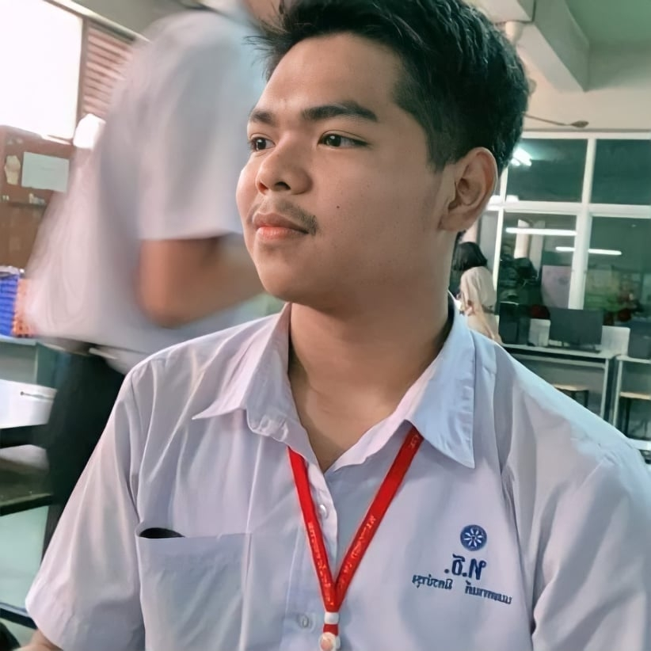

<!DOCTYPE html>
<html   lang="en-US">
    <Head>
        <meta charset="UTF-8" />
        <meta name ="Viewport" content="width=device-width"/>
        <title>ประวัติส่วนตัว</title>
    </Head>
</html>
<h1 style="color: #3333FF;">ประวัติส่วนตัว</h1>
<h3>นายนนทกานต์ มิตบำรุง</h3>

<hr>
<h2 style="color: #3333FF;">ข้อมูลส่วนตัว</h2>
<h4>ชื่อนายนนทกานต์ มิตรบำรุง ที่อยู่ 20/1 หมู่ 2 ตำบลบางกะเจ้า อำเภอพระประแดง จังหวัดสมุทรปราการ 10130 เพศชาย อายุ 21 ปี เกิดที่โรงพยาบาลตำรวจ เป็นคนกลาง พูดได้แค่ภาษากลาง แต่อยากศึกษาภาษาเหนือและใต้ ภาษาอังกฤษพอถูๆไถๆได้ ไม่ได้เก่งมาก ที่ได้ภาษาอังกฤษส่วนใหญ่จะมาจากเกมที่เล่นเพราะตนไม่ค่อยชอบเรียนภาษาอังกฤษไม่ชอบพูด เรื่องเรียนก็พอประมาณในบางวิชา หรือวิชาที่ไม่เข้าใจเลยก็จะไม่เข้าใจสักนิด แต่ส่วนมากจะชอบวิชาเกี่ยวกับคอมพิวเตอร์สักส่วนใหญ่เพราะว่าอยู่กับคอมพิวเตอร์ตั้งแต่เด็กๆ แต่ศึกษาเรื่องคอมมาน้อยมากๆ ตอนประถมศึกษาก็ไม่เคยได้เรียนเพราะโรงเรียนไม่มีคอมพิวเตอร์ แต่พอมาเจอตอนมัธยมก็รู้สึกว่ารักคอมพิวเตอร์ จนอยากจะเรียนไปให้สูงกว่านี้จึงต่อป.ตรี แต่ดันไม่ค่อยเข้าใจมากสักเท่าไหร่ จึงทำให้ตอนขึ้นปี 2 ได้ต่อสาย IT เพราะกลัวว่าตนเองจะไม่ไหวในสาย CS </h4>
<hr>
<h2 style="color: #3333FF;">ประวัติการศึกษา</h2>
<h4>ตั้งแต่มัธยมศึกษาชั้นปีที่ 1-6 ได้เรียนที่โรงเรียนวัดทรงธรรม จังหวัดสมุทรปราการ และได้สำเร็จการศึกษาและได้ศึกษาต่อที่ มหาวิทยาลัยเทคโนโลยีราชมงคลกรุงเทพ และปัจจุบันได้ศึกษาในป.ตรีระดับชั้นปีที่ 3</h4>
<hr>
<h2 style="color: #3333FF;">ความสนใจ</h2>
<h4>สนใจในเรื่องคอมพิวเตอร์ตั้งแต่เด็กๆ ชอบในการเล่นคอมพิวเตอร์เป็นชีวิตประจำวัน และอยากหางานหรือเงินจากคอมพิวเตอร์ อยากได้ความรู้และความเข้าใจที่ได้จากการเรียนการศึกษาไปใช้ในชีวิตประจำวันใช้ในอนาคต อยากทำงานบนคอมพิวเตอร์ให้เป็นรายได้หลัก</h4>
<hr>
<h2 style="color: #3333FF;">สิ่งที่อยากทำเป็นอันดับแรกๆ</h2>
<h4>อยากมีเพื่อนเยอะๆ ที่สามารถช่วยกันในเรื่องที่เราไม่สามารถทำหรือเข้าใจได้ อยากเข้าสังคมเป็นแต่ตนเองเป็นคนที่ไม่ชอบอยู่กับคนเยอะที่อึดอัด และอยากเรียนจบเพื่อเอาใบจบไปฝากพ่อ และอยากแบ่งเบาภาระของที่บ้าน จากการเล่นคอมพิวเตอร์ ถึงทุกวันนี้จะสามารถขายของหรือขายไอเท็มจากเกมได้แต่มันก็ไม่พอสำหรับชีวิตประจำวัน เป็นพวกเก็บตัวหลังจากเรียนเสร็จที่มอก็จะรีบกลับบ้านไม่ชอบออกไปไหน จึงจะไม่รู้เรื่องโลกภายนอกมากนัก</h4>
<hr>
<h2 style="color: #3333FF;">สรุป</h2>
<h4>ผมมีความต้องการที่จะไปสายหรือไปทางคอมพิวเตอร์ในระดับสูงเพราะตนเองก็มีความคุ้นเคยกับคอมพิวเตอร์ตั้งแต่ 6 ขวบจนถึงปัจจุบัน อาจจะตอบได้ว่าอยู่กับคอมพิวเตอร์มาเกือบทั้งชีวิต พอได้ไปเล่นเกมที่คนอื่นสร้างแล้วเราอยากสร้างเกมที่เป็นของเราบ้าง จึงอยากเรียนวิชาคอมพิวเตอร์ในระดับสูง แต่โดยเฉพาะวิชาเขียนโค้ดที่ตนจะทำความเข้าใจยากเพราะภาษาอังกฤษก็ไม่เก่ง โค้ดก็งงๆแถมเยอะไปหมด แต่จะพยายามให้ถึงที่สุดเท่าที่ตนเองจะทำได้</h4>
<hr>
<a href="./งานอดิเรก.html"><h3>งานอดิเรก</h3></a>
<a href="./Contact Me.html"><h3>Contact Me</h3></a>
<footer>
    <p>© Nonthakarn</p>
</footer>
